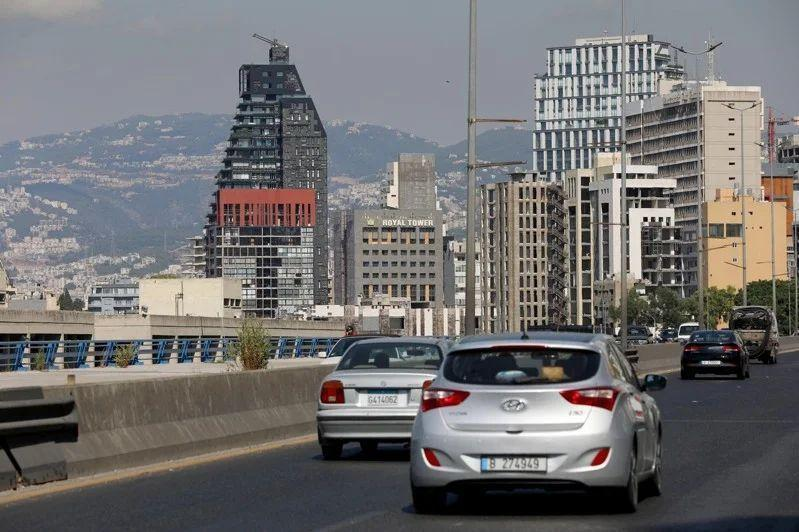

4年前的今天，黎巴嫩首都贝鲁特（Beirut）港口爆炸案夺走超过220条人命。如今，气氛哀伤肃穆的纪念活动被以色列和真主党可能爆发全面战争的担忧所笼罩。
法新社报导，数场游行的人群将于今天下午聚集在港口，悼念罹难者并要求伸张正义。
2020年8月4日，贝鲁特港发生大爆炸，造成逾220人死亡、至少6500人受伤，首都大片地区被毁，但迄今仍然没有任何人为这场史上最大的非核爆炸之一负起责任。黎巴嫩当局表示，这场爆炸是由任意存放的硝酸铵肥料起火引发。
联合国黎巴嫩事务特别协调员普拉斯哈尔特（Jeanine Hennis-Plasschaert）昨天发布声明表示，「这样的一场人为灾难竟然完全没人被究责，令人震惊。人们期盼有关当局努力不懈，扫除所有障碍…但事实完全相反」。她呼吁进行「公正、彻底、透明的调查，以找出真相和伸张正义，并追究相关责任。」
今年的贝鲁特港爆炸纪念活动笼罩在可能爆发进一步灾难的阴影之下。自巴勒斯坦伊斯兰主义组织哈玛斯（Hamas）去年10月7日闯入以色列发动攻击、引发以哈战争以来，哈玛斯盟友真主党（Hezbollah）多次和以色列军队爆发跨界交火，许多人担忧全面冲突可能席卷黎巴嫩。